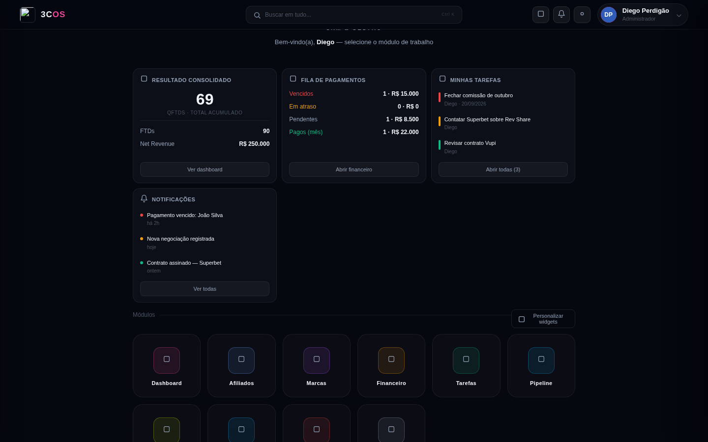
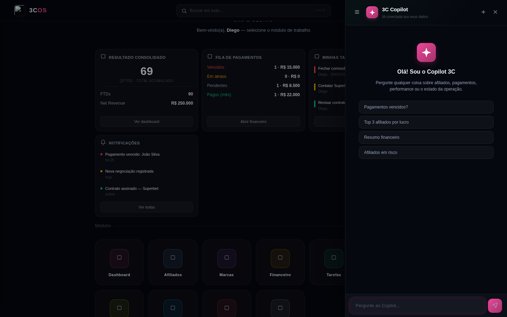
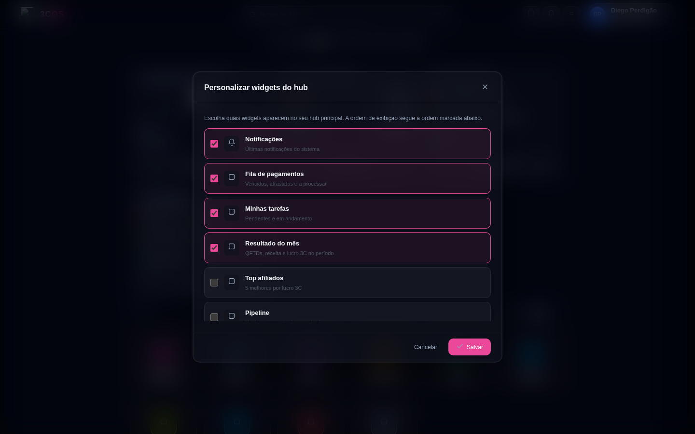
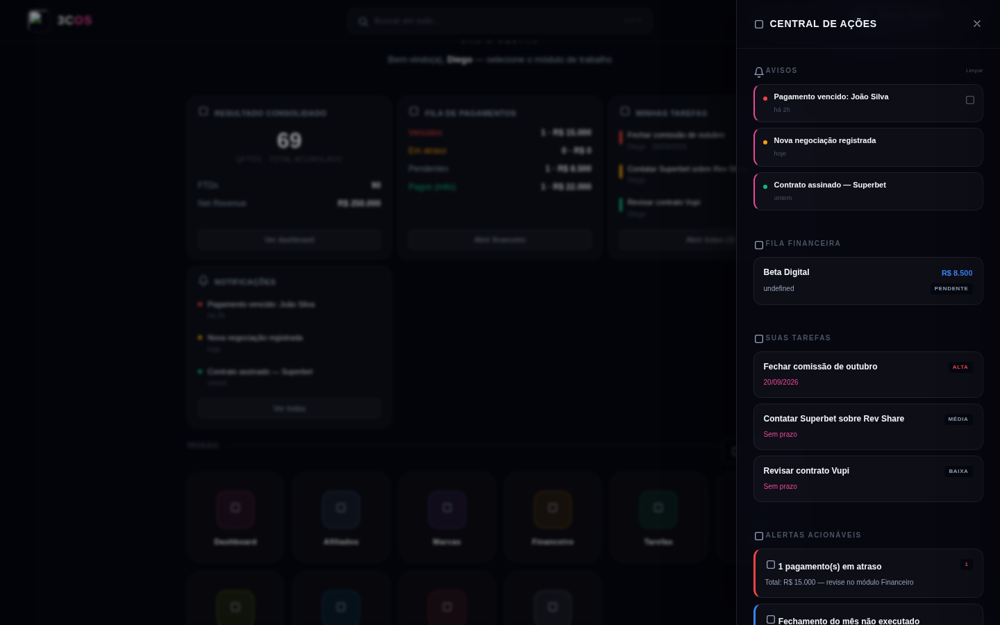
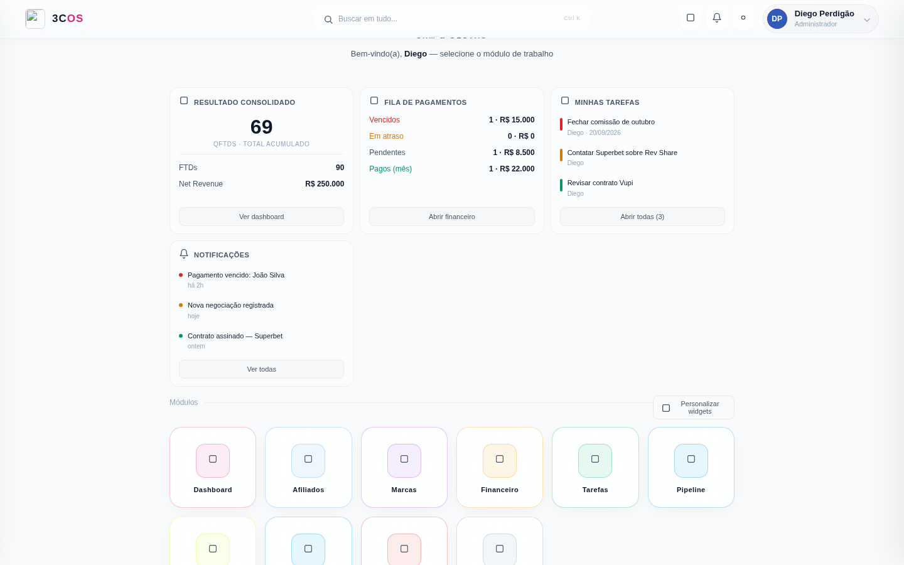

3C OS Pro — Visual Reference
1. Fundações
1.1. Paleta de cores
Todas as cores são expostas como CSS variables no :root. Cada tema (dark/light) sobrescreve o mesmo conjunto de variáveis — os componentes nunca hardcodam hex.
Brand (theme accent)
Backgrounds e surfaces (dark mode)
Borders (glass borders escalonadas)
Text (3 níveis)
Cores semânticas (status)
Cores dos módulos (do array MODS[])
Cada módulo tem uma cor stroke (ícone) e 3 tonalidades derivadas (color, glow, bg). Injetadas como CSS vars por instância: --app-stroke, --app-border, --app-glow, --app-bg.
1.2. Tipografia
Duas famílias — Montserrat para display (títulos, wordmark), Inter para body/UI.
--fd: 'Montserrat', sans-serif; /* display: títulos, wordmarks, labels */
--fb: 'Inter', sans-serif; /* body: textos, botões, forms, UI */Carregadas via Google Fonts no <head>:
<link href="https://fonts.googleapis.com/css2?family=Inter:wght@400;500;600;700;800;900&family=Montserrat:wght@600;700;800;900&display=swap" rel="stylesheet">Escala de tamanhos
1.3. Espaçamento e radius
| Token | Valor | Uso |
|---|---|---|
--radius | 14px | Cards, painéis, modais (default) |
--space | 16px | Base do sistema de spacing |
| Radius pequeno | 6-9px | Botões pequenos, dots, tags |
| Radius médio | 10-14px | Cards padrão, ícones de módulo |
| Radius grande | 16-20px | Painéis grandes, hero logo |
| Radius circle | 50% | Avatares, dots, badges arredondados |
1.4. Shadows e efeitos
Poucos shadows explícitos — o app depende mais de borders sutis + glow colorido (via box-shadow spread) do que sombras densas.
/* Glow accent (usado em botões theme, cards ativos) */
box-shadow: 0 0 0 3px var(--theme-glow);
/* Card lift no hover */
box-shadow: 0 8px 24px rgba(0, 0, 0, 0.3);
/* Glass border (transparente + backdrop-filter) */
border: 1px solid var(--glass-border);
backdrop-filter: blur(12px);1.5. Iconografia
Lucide (lucide.dev) via CDN. Todos os ícones no HTML como <i data-lucide="X"></i> — a função lucide.createIcons() substitui por SVG inline após cada render.
- Tamanho padrão: 15-16px (top bar), 24px (module cards), 18px (buttons)
- Stroke default: 2px (Lucide padrão)
- Stroke fino em cards de módulo: 1.7px (via
.hub-app-icon svg { stroke-width: 1.7 }) - Cor sempre via
stroke: currentColorou custom (--app-stroke)
2. Screenshots das telas principais
Capturas em viewport 1440×900 · tema dark · usuário admin com todos os módulos. Os ícones dos módulos aparecem como quadrados placeholders porque o Lucide (CDN) foi bloqueado no ambiente de captura — no navegador real aparecem os ícones específicos de cada função.
2.1. Hub (tela inicial)
Fluxo pós-login. Contém top bar, greeting hero, faixa de widgets customizáveis e grid de módulos. Container: #hub em position: fixed; inset: 0; z-index: 190.

2.2. Copilot — tela de boas-vindas
Drawer lateral direito (~440px) sobreposto ao hub. Fundo do hub é escurecido via #copilot-overlay (backdrop). Botão + no header inicia nova conversa, hamburger abre histórico.

2.3. Copilot — conversa em andamento
Bubbles diferentes para user (sem avatar, alinhado à direita) e assistant (com avatar Gemini pink, alinhado à esquerda). Suporta markdown básico (**bold**, *italic*, `code`, listas - item).

2.4. Widget picker modal
Modal disparado pelo botão "Personalizar widgets" (canto superior do grid de módulos). Cada row é um <label class="hwp-row"> com checkbox nativo + ícone + nome + descrição. Widgets ativos ganham border e background rosa via .hwp-row:has(:checked).

2.5. Action Center (drawer de notificações)
Drawer lateral direito acionado pelo botão sino no top bar. Diferente do Copilot: #action-center tem largura menor (~360px) e é para notificações do sistema.

2.6. Light mode
Ativado por document.documentElement.setAttribute('data-theme', 'light'). Sobrescreve --bg, --text, borders e as cores semânticas (theme vira #db2777, verde mais escuro, etc). Toggle no botão sun/moon do top bar.

--bg: #f8fafc + --text: #0f172a2.7. Anatomia do Hub — regiões
Referência para localizar cada componente na tela:
| Região | Container | Z-index | Descrição |
|---|---|---|---|
| Background wallpaper | .hub-bg + .mosaic-pattern | 0 | Absolute inset 0 · pattern animado + overlay |
| Top bar | .hub-bar | 10 | 60px altura, padding 0 40px · grid 3-col (l/c/r) |
| Main content | .hub-main | 2 | Flex 1, coluna, centro, max-width 900px |
| Widgets strip | #hub-widgets | — | Grid horizontal, até 4 tiles visíveis |
| Módulos grid | #hub-cards | — | Grid dinâmico (colunas = módulos visíveis, max 6) |
| Copilot FAB | #copilot-fab | 9000 | Fixed bottom 24px right 24px · só visível em beta |
| Copilot drawer | #copilot-drawer | 9500 | Fixed right 0 top 0 · largura 440px |
| Action Center | #action-center | — | Fixed right 0 · largura 360px |
| Modal | #modal-ov | 500 | Fixed inset 0 · overlay + card centralizado |
| Toasts | #toasts | 9999 | Bottom right · stack de mensagens temporárias |
| Splash (boot) | #splash | 9999 | Fixed inset 0 · sobrepõe tudo até primeiro click |
| Lock screen | #lock | 200 | Login/tema pré-hub |
3. Componentes reutilizáveis
Copie-cole os blocos abaixo direto em outro projeto. Cada componente inclui HTML + CSS + demo visual. Dependem apenas das CSS variables da Seção 1 e da lib Lucide.
3.1. Botões
Sistema com 4 variantes (theme, outline, ghost, danger). Todos compartilham a classe base .btn.
CSS
.btn{
display:inline-flex; align-items:center; gap:6px;
padding:8px 16px; border-radius:10px;
font-family:var(--fb); font-size:12px; font-weight:500;
cursor:pointer; border:none; transition:all 0.2s; white-space:nowrap;
}
.btn svg{ width:12px; height:12px; }
.btn-theme{ background:var(--theme); color:#fff; }
.btn-theme:hover{ transform:translateY(-1px); box-shadow:0 4px 12px var(--theme-dim); }
.btn-outline{ background:transparent; color:var(--text); border:1px solid var(--gb2); }
.btn-outline:hover{ border-color:var(--theme-b); color:var(--theme); }
.btn-ghost{ background:transparent; color:var(--text2); }
.btn-ghost:hover{ background:var(--bg3); color:var(--text); }
.btn-danger{ background:transparent; color:var(--red); border:1px solid rgba(239,68,68,0.3); }
.btn-danger:hover{ background:rgba(239,68,68,0.08); }HTML
<button class="btn btn-theme"><i data-lucide="check"></i> Salvar</button>
<button class="btn btn-outline">Cancelar</button>
<button class="btn btn-ghost">Fechar</button>
<button class="btn btn-danger"><i data-lucide="trash-2"></i> Excluir</button>Demo
3.2. Icon Button (top bar)
Usado no top bar do hub (sino, tema, beta). Quadrado com ícone centralizado.
CSS + HTML
.hub-icon-btn{
width:34px; height:34px; border-radius:9px; cursor:pointer;
display:inline-flex; align-items:center; justify-content:center;
background:transparent; color:var(--text2); border:none;
transition:all 0.15s; position:relative;
}
.hub-icon-btn:hover{ background:rgba(255,255,255,0.12); color:var(--text); }
.hub-icon-btn svg{ width:15px; height:15px; }
/* Badge de contagem */
.hub-notif-badge{
position:absolute; top:-4px; right:-4px;
width:15px; height:15px; border-radius:50%;
background:var(--red); color:#fff; font-size:9px; font-weight:700;
display:flex; align-items:center; justify-content:center;
}
<button class="hub-icon-btn">
<i data-lucide="bell"></i>
<div class="hub-notif-badge">3</div>
</button>3.3. Cards / Painéis (Widget shell)
Base visual dos widgets do hub. Card com header + body + footer opcional.
CSS
.hub-widget{
background:var(--bg2);
border:1px solid var(--gb);
border-radius:14px;
padding:16px 18px 14px;
display:flex; flex-direction:column;
min-height:160px;
}
.hw-hdr{
display:flex; align-items:center; gap:8px;
color:var(--text2); margin-bottom:10px;
font-size:11px; font-weight:700;
text-transform:uppercase; letter-spacing:0.05em;
}
.hw-hdr svg{ width:12px; height:12px; }
.hw-body{ flex:1; }
.hw-ftr{
margin-top:12px; padding-top:10px;
border-top:1px solid var(--gb);
}
.hw-cta{
width:100%; padding:8px; background:transparent;
color:var(--text2); border:none; cursor:pointer;
font-size:11px; font-weight:600; border-radius:8px;
transition:all 0.15s;
}
.hw-cta:hover{ background:var(--bg3); color:var(--text); }
/* Linha de stat (label + valor) */
.hw-stat-row{
display:flex; justify-content:space-between;
padding:6px 0; font-size:12px;
}
.hw-stat-lbl{ color:var(--text2); font-weight:500; }
.hw-stat-val{ color:var(--text); font-weight:700; }
.hw-empty{
text-align:center; padding:20px 0;
color:var(--text3); font-size:12px;
}HTML (widget de exemplo)
<div class="hub-widget" data-wid="payments_queue">
<div class="hw-hdr">
<i data-lucide="banknote"></i>
<span class="hw-title">Fila de pagamentos</span>
</div>
<div class="hw-body">
<div class="hw-stat-row">
<span class="hw-stat-lbl" style="color:var(--red)">Vencidos</span>
<span class="hw-stat-val">1 · R$ 15.000</span>
</div>
<div class="hw-stat-row">
<span class="hw-stat-lbl" style="color:var(--amber)">Em atraso</span>
<span class="hw-stat-val">0 · R$ 0</span>
</div>
<div class="hw-stat-row">
<span class="hw-stat-lbl">Pendentes</span>
<span class="hw-stat-val">1 · R$ 8.500</span>
</div>
</div>
<div class="hw-ftr">
<button class="hw-cta">Abrir financeiro</button>
</div>
</div>3.4. Modal (overlay + card centralizado)
Estrutura genérica usada por todos os modais do sistema. Fechado por default (opacity 0), animado com transition.
CSS
#modal-ov{
position:fixed; inset:0; z-index:500;
background:rgba(0,0,0,0.75);
display:none; align-items:center; justify-content:center;
opacity:0; transition:opacity 0.25s;
backdrop-filter:blur(6px);
}
#modal-ov.on{ display:flex; opacity:1; }
.modal{
background:var(--bg2);
border:1px solid var(--gb2);
border-radius:14px;
width:min(560px, 90vw);
max-height:85vh;
display:flex; flex-direction:column;
box-shadow:0 20px 60px rgba(0,0,0,0.5);
}
.modal-hdr{
display:flex; align-items:center; justify-content:space-between;
padding:18px 22px; border-bottom:1px solid var(--gb);
}
.modal-ttl{ font-weight:700; font-size:14px; color:var(--text); }
.modal-cls{
background:transparent; border:none; color:var(--text2);
cursor:pointer; padding:4px; border-radius:6px;
}
.modal-cls:hover{ background:var(--bg3); color:var(--text); }
.modal-bd{ padding:20px 22px; overflow-y:auto; font-size:13px; }
.modal-ft{
padding:14px 22px; border-top:1px solid var(--gb);
display:flex; justify-content:flex-end; gap:8px;
}HTML + JS de abertura
<div id="modal-ov">
<div class="modal">
<div class="modal-hdr">
<span class="modal-ttl" id="mttl"></span>
<button class="modal-cls" onclick="closeModal()"><i data-lucide="x"></i></button>
</div>
<div class="modal-bd" id="mbd"></div>
<div class="modal-ft" id="mft"></div>
</div>
</div>
<script>
function openModal(title, bodyHTML, footerHTML){
document.getElementById('mttl').textContent = title;
document.getElementById('mbd').innerHTML = bodyHTML;
document.getElementById('mft').innerHTML = footerHTML || '';
document.getElementById('modal-ov').classList.add('on');
if (window.lucide) lucide.createIcons();
}
function closeModal(){
document.getElementById('modal-ov').classList.remove('on');
}
</script>3.5. Toast (notificações efêmeras)
Balão de mensagem no canto inferior direito. Auto-dismiss em 3.5s. 3 tipos: success (verde), warning (âmbar), error (vermelho).
CSS
#toasts{
position:fixed; bottom:24px; right:24px; z-index:9999;
display:flex; flex-direction:column-reverse; gap:8px;
pointer-events:none;
}
.toast{
background:var(--bg2);
border:1px solid var(--gb2);
border-radius:10px;
padding:12px 16px;
min-width:220px; max-width:360px;
font-size:13px; color:var(--text);
box-shadow:0 8px 24px rgba(0,0,0,0.4);
pointer-events:auto;
animation:toast-in 0.25s ease-out;
}
.toast.s{ border-left:3px solid var(--green); }
.toast.w{ border-left:3px solid var(--amber); }
.toast.e{ border-left:3px solid var(--red); }
@keyframes toast-in{ from{transform:translateX(20px);opacity:0} to{transform:translateX(0);opacity:1} }JS
function toast(text, type = 's'){ // 's', 'w', 'e'
const el = document.createElement('div');
el.className = 'toast ' + type;
el.textContent = text;
document.getElementById('toasts').appendChild(el);
setTimeout(() => el.remove(), 3500);
}3.6. Prioridade / status badges
CSS
.pri{
display:inline-block; padding:2px 8px; border-radius:5px;
font-size:9px; font-weight:700; letter-spacing:0.05em;
text-transform:uppercase;
}
.pri-a{ background:rgba(239,68,68,0.14); color:var(--red); } /* alta */
.pri-m{ background:rgba(245,158,11,0.14); color:var(--amber); } /* média */
.pri-b{ background:rgba(16,185,129,0.14); color:var(--green); } /* baixa */
/* Dot da tarefa (usado em widget de tarefas) */
.hw-task-dot{
width:8px; height:8px; border-radius:50%;
flex-shrink:0; margin-top:5px;
}
.hw-pri-a{ background:var(--red); }
.hw-pri-m{ background:var(--amber); }
.hw-pri-b{ background:var(--green); }3.7. Search pill (barra de busca)
CSS + HTML
.search-pill{
position:relative;
display:inline-flex; align-items:center; gap:10px;
background:var(--bg2); border:1px solid var(--gb);
border-radius:20px; padding:8px 16px;
min-width:420px; cursor:text;
transition:all 0.15s;
}
.search-pill:hover, .search-pill:focus-within{
border-color:var(--gb2); background:var(--bg3);
}
.search-pill-icon{ width:14px; height:14px; color:var(--text2); }
.search-pill-input{
flex:1; background:none; border:none; outline:none;
color:var(--text); font-size:13px;
}
.search-pill-input::placeholder{ color:var(--text3); }
.search-pill-hint{
font-size:10px; font-weight:600; color:var(--text3);
padding:2px 6px; border-radius:4px;
background:var(--bg3); border:1px solid var(--gb);
}
<div class="search-pill">
<i data-lucide="search" class="search-pill-icon"></i>
<input type="text" class="search-pill-input" placeholder="Buscar em tudo...">
<span class="search-pill-hint">Ctrl K</span>
</div>3.8. User chip (perfil no top bar)
CSS + HTML
.hub-user-chip{
position:relative;
display:flex; align-items:center; gap:12px;
padding:6px 14px 6px 6px;
cursor:pointer; border-radius:20px;
transition:background 0.15s;
}
.hub-user-chip:hover{ background:var(--bg2); }
.hub-user-avatar{
width:32px; height:32px; border-radius:50%;
display:flex; align-items:center; justify-content:center;
overflow:hidden; flex-shrink:0;
}
.hub-user-info{ display:flex; flex-direction:column; gap:1px; }
.hub-user-name{
font-size:13px; font-weight:600; color:var(--text);
line-height:1.3; white-space:nowrap;
}
.hub-user-role{
font-size:11px; color:var(--text3);
line-height:1.2; white-space:nowrap;
}
<div class="hub-user-chip">
<div class="hub-user-avatar">
<span style="width:32px;height:32px;border-radius:50%;background:hsl(220,60%,45%);
display:flex;align-items:center;justify-content:center;
color:#fff;font-weight:700;font-size:12px">DP</span>
</div>
<div class="hub-user-info">
<div class="hub-user-name">Diego Perdigão</div>
<span class="hub-user-role">Administrador</span>
</div>
<i data-lucide="chevron-down" style="width:12px;height:12px;opacity:0.5"></i>
</div>3.9. Módulo card (do grid do hub)
Card clicável que abre um módulo. Cor customizada por CSS variables inline.
CSS
.hub-app{
position:relative; overflow:hidden;
background:var(--bg2);
border:1px solid var(--gb);
border-radius:14px;
padding:18px 12px 14px;
text-align:center; cursor:pointer;
transition:transform 0.2s, border-color 0.2s;
aspect-ratio:1;
display:flex; flex-direction:column;
align-items:center; justify-content:center;
}
.hub-app:hover{
transform:scale(1.02) translateY(-4px);
border-color:var(--app-border);
}
.hub-app::before{
content:''; position:absolute; inset:0;
background:radial-gradient(circle at center, var(--app-glow), transparent 70%);
opacity:0; transition:opacity 0.2s;
}
.hub-app:hover::before{ opacity:1; }
.hub-app-icon{
width:54px; height:54px; border-radius:14px;
background:var(--app-bg);
display:flex; align-items:center; justify-content:center;
margin-bottom:10px;
}
.hub-app-icon svg{
width:24px; height:24px;
stroke:var(--app-stroke); stroke-width:1.7;
}
.hub-app-name{
font-family:var(--fd); font-size:11px; font-weight:700;
color:var(--text); letter-spacing:0.02em;
position:relative; z-index:1;
}HTML (com cores inline)
<div class="hub-app"
onclick="openMod('affiliates')"
style="--app-border:rgba(96,165,250,0.32);
--app-glow:rgba(96,165,250,0.14);
--app-bg:rgba(96,165,250,0.1);
--app-stroke:#3b82f6">
<div class="hub-app-icon"><i data-lucide="users"></i></div>
<div class="hub-app-name">Afiliados</div>
</div>3.10. Copilot bubbles
Diferentes para user (right-aligned) e assistant (left-aligned com avatar).
CSS
.cp-msg{
display:flex; gap:10px; padding:8px 20px;
align-items:flex-start;
}
.cp-msg-user{ justify-content:flex-end; }
.cp-msg-assist .cp-msg-avatar{
width:28px; height:28px; border-radius:50%;
background:linear-gradient(135deg, #ec4899, #a855f7);
display:flex; align-items:center; justify-content:center;
color:#fff; flex-shrink:0;
}
.cp-bubble{
max-width:76%; padding:10px 14px;
border-radius:14px;
font-size:13px; line-height:1.5;
color:var(--text);
}
.cp-msg-user .cp-bubble{
background:var(--theme-dim);
border:1px solid var(--theme-b);
border-radius:14px 14px 4px 14px;
}
.cp-msg-assist .cp-bubble{
background:var(--bg2);
border:1px solid var(--gb);
border-radius:14px 14px 14px 4px;
}
.cp-bubble strong{ color:var(--text); font-weight:700; }
.cp-bubble code{
background:var(--bg3); padding:2px 5px; border-radius:4px;
font-family:'SF Mono', monospace; font-size:11.5px;
}
/* Typing indicator (3 dots animados) */
.cp-typing{ display:flex; gap:4px; padding:12px 14px; }
.cp-typing span{
width:6px; height:6px; border-radius:50%;
background:var(--text3);
animation:cp-dot 1.4s infinite;
}
.cp-typing span:nth-child(2){ animation-delay:0.2s; }
.cp-typing span:nth-child(3){ animation-delay:0.4s; }
@keyframes cp-dot{
0%,60%,100%{ opacity:0.3; }
30%{ opacity:1; }
}3.11. Drawer lateral direito
Padrão usado por Copilot, Action Center e Mobile Sidebar. Sliding panel com backdrop.
CSS
.drawer{
position:fixed; top:0; right:0; bottom:0;
width:440px; max-width:90vw;
background:var(--bg);
border-left:1px solid var(--gb2);
z-index:9500;
transform:translateX(100%);
transition:transform 0.28s ease-out;
display:flex; flex-direction:column;
box-shadow:-20px 0 60px rgba(0,0,0,0.5);
}
.drawer.open{ transform:translateX(0); }
.drawer-overlay{
position:fixed; inset:0;
background:rgba(0,0,0,0.4);
z-index:9400;
opacity:0; pointer-events:none;
transition:opacity 0.2s;
backdrop-filter:blur(2px);
}
.drawer-overlay.open{ opacity:1; pointer-events:auto; }3.12. Utilitários finais
| Classe | Uso |
|---|---|
.hub-desktop-only | Some em max-width:768px |
.mob-only | Aparece só em mobile |
.on | Flag genérica de "ativo" — usada em modais, drawers, dropdowns |
.hub-beta-dot | Dot pulsante no ícone Beta |
4. Sistema de temas e editions
Placeholder — preenchido em seguida.
5. Como reusar em outro projeto
Placeholder — preenchido em seguida.